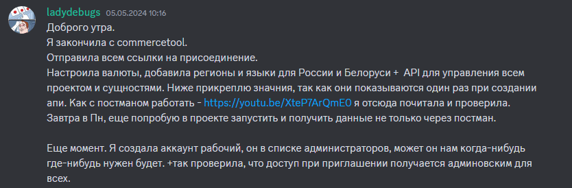
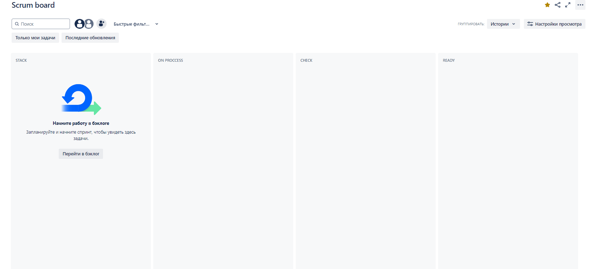
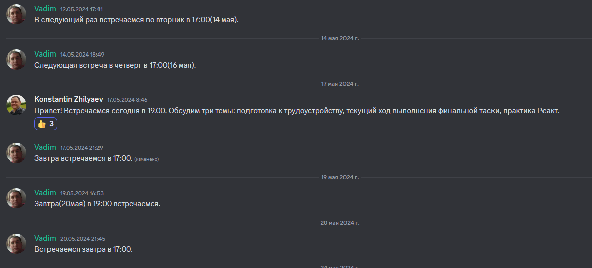

Финальная презентация проекта
Проходимцы
Девиз:
Пройдем через все преграды!
Выбор тематики
- Спортивная одежда
- Электроника
- Мебель
- Азиатская еда
GEEK-SHOP
В конце концов, мы остановились на магазине подарков, коллекционных фигурок и косплея.Командные усилия
Еще до начала старта первого спринта мы собирались и совместно изучали React.
С ментором мы видились каждую неделю, решали маленькие задачи в качестве домашнего задания и смотрели видео-уроки
Дизайн
Дизайн - это наша совместная работа, которая с самого начала выбиралась при помощи голосований, обсуждений, внесения поправок.
Первый вид макета
Был сделан в отдельном репозитории для рассмотрения как цвета будут смотреться в реальном случае.


Окончательный вид первичного дизайна
Последним изменением перед подтверждением дизайна было добавление картинки в качестве фона.


Акцент
Для красивого внедрение яркого акцента мы обратились к ИИ-генерации картин.

Финальный вид

Финальный вид

Роль команды
- Опыт в различных сферах
- Коллективное обучение
- Взаимопомощь
- Взаимоподдержка
Опыт в различных сферах
- Вадим: TSQL developer, прошел курс разработчика Frontendblok
- Иван: Java, прошел курс фронтенд-разработчика HTML Academy
- Александра: PHP, C++, Python, Wordpress, прошла курс разработчика 3WC
Чуть больше можно узнать на странице "О нас" в нашем проекте
Коллективное обучение
Взаимопомощь
Взаимоподдержка
Взаимоподдержка
Взаимоподдержка

Координация проекта
Планирование и выполнение задач происходило в Jira. Мы соблюдали правила гибкой методологии scram для достижения лучших результатов.
Канбан-доска
Распределение задач
На моменте создания задач в бэклоге и начала спринта мы распределяли задачи. Главными принципами распределения были:
- Загруженность в предыдущем спринте
- Планы и временные обязательства на текущем спринте
- Неблокирование членов команды
- Опыт в решении подобных задачах
Временные диапазоны задач
Процесс поддержки коммуникаций
Каждые два дня мы собирались в голосовом чате Дискорда для обсуждения прогресса проекта, наших проблем, загруженности, показывали методы решений и каких результатов добились.
Реальные сценарии
- Настройка VS Code для быстрого форматирования с помощью горячих клавиш
- Перераспределение задач после скрама. Задача "Навигация по подкатегориям"

Показатели активности

Аналитики проекта
История проекта

Ветка спринта 4
Примеры PR

Примеры PR

Readme

Технологический стек

В заключении
- Ссылка на деплой проекта
- Ссылка на проект
- Аналитика git